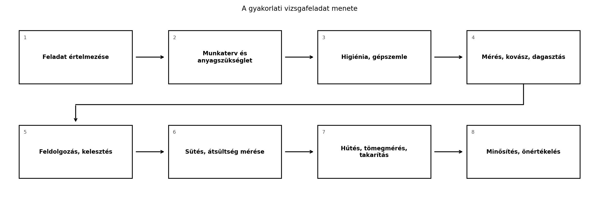

A gyakorlati vizsgán nem az a kérdés, hogy tudsz-e kenyeret sütni, hanem az, hogy adott időre, adott mennyiségben, dokumentáltan, higiénikusan és biztonságosan el tudsz-e készíteni két-három terméket úgy, hogy a vizsgabizottság minden lépést lásson. Aki a pékségben jól dolgozik, a vizsgán is elbukhat, ha nem tervez: a két termék egyszerre akar a kemencébe kerülni, a kovász nincs kész, amikor dagasztani kellene, vagy a gép tisztításánál kihagyja az áramtalanítást, és ez az egész feladat értékelését veszélyezteti.
Ez az alfejezet a könyv utolsó láncszeme. Egy mintafeladaton végigvezet a munkatervtől, az anyagszükséglettől és a technológiai laptól az időterven, a gyakorlati végrehajtáson és a dokumentáláson át a minősítésig és az önértékelésig. Mindent felhasznál, amit eddig tanultál: a feladási tömeget, a kovász- és dagasztóvíz-számítást (A vizsga felépítése és az írásbeli számítási feladatok), a HACCP–minőség kapcsolatot (Elméleti tételek: technológia, higiénia, minőség), a mérési dokumentálást (Mérési eredmények dokumentálása és minőségi eltérések kezelése) és az átsültség ellenőrzését (Sütési idő és hőmérséklet, átsültség, kisütés és dokumentálás).
A vizsganap egy kis gyártási nap. A sor:

Az ábrán nincs visszacsatoló nyíl, mert a vizsgán nincs idő újrakezdeni: a hibát a terv szintjén kell megelőzni.
Definíció. A gyakorlati vizsgafeladat olyan termékkészítési feladat, amelyben a vizsgázó adott termékeket, adott mennyiségben, adott idő alatt állít elő, és a munkáját a bizottság a folyamat és a késztermék alapján értékeli.
Definíció. A munkaterv a feladat írásos terve: a termékek, a darabszámok, az anyagszükséglet, a technológiai lapok, a gépek és eszközök, valamint az időterv, amely percre megadja, mikor melyik művelet zajlik.
A feladattípusok (ellenőrizendő: hatályos KKK és vizsgaleírás):
Előírás. A vizsgán a higiéniai és munkavédelmi szabályok betartása feltétel; súlyos, életet vagy egészséget veszélyeztető szabályszegésnél a vizsgabizottság a feladatot leállíthatja (ellenőrizendő: vizsgaszabályzat). Ez nem formaság: a vizsgán pontosan azt nézik, amit a munkahely is elvár.
Feladat (tanulási példa). Vizsgaidő 6,5 óra. Készíts 6 db 1,0 kg késztömegű, formában sült fehér búzakenyeret közvetett eljárással (kovásszal) és 20 db 50 g késztömegű tejes kiflit. Készíts munkatervet, technológiai lapot, időtervet; dokumentáld a mérést, a CCP-t, végül minősítsd a termékeidet.
Adott: , , (tanulási példa, a Búzakenyér és fehér kenyér előállítása alfejezet értékei). Megjegyzés: a Búzakenyér és fehér kenyér előállítása mindkét veszteséget a feladási tömegre vetíti (m_f = m_k / (1 − 0,12) ≈ 1,136 kg); itt a hűlési veszteséget a sült (meleg) tömegre vetítjük, ezért szorzatos az alak – a kerekített eredmény azonos (1,14 kg).
Feladandó tészta: . Erjedési és feldolgozási tartalékkal (kb. 2 %) legalább tészta kell. A receptúra összege 166 % (liszt 100, víz 62, só 2, élesztő 2), ezért a liszt ; kényelmes kerekítéssel 4,25 kg liszt, ebből 7,055 kg tészta lesz.
Kovász: kovásznagyság 20 %, kovász-TA 160 (Kovászszámítások és a kovász dokumentálása):
A kovászba 20 g élesztő kerül, a többi 65 g a főtésztába.
Dagasztóvíz: tésztahőmérséklet 27 °C, liszt 20 °C, kovász 26 °C, súrlódási hő 4 °C (tapasztalati, ellenőrizendő: gépkönyv):
A Tejes tészta és tejes tésztából készült péksütemények technológiai lapja szerint a feladási tömeg kb. 57,5 g (összes veszteség kb. 13 %: ). Feladandó: . A receptúra összege 168,5 %; 0,70 kg liszttel a tészta , ez fedezi az 1150 g-ot.
Termék: Fehér búzakenyér, formában sült, termékcsoport: kenyér; késztömeg 1,0 kg/db, 6 db.
Kovász
| Nyersanyag | Lisztre vetített % (teljes lisztre) | Mennyiség (kg) | Megjegyzés |
|---|---|---|---|
| BL 80 búzaliszt (fehér kenyérliszt) | 20 | 0,850 | 20 °C |
| Víz | 12 | 0,510 | kb. 30 °C, hogy a kovász 26 °C legyen (hőmérleg a fajhőkkel, lásd Tésztahőmérséklet és dagasztóvíz számítása: , azaz °C; tanulási példa) |
| Préselt élesztő | 0,5 | 0,020 | elmorzsolva |
| Kovász összesen | — | 1,380 | kovász-TA 160 |
Főtészta és összesítés
| Nyersanyag | Lisztre vetített % | Mennyiség (kg) | Megjegyzés |
|---|---|---|---|
| BL 80 búzaliszt (fehér kenyérliszt) | 80 | 3,400 | 20 °C; összes liszt 4,250 kg = 100 % |
| Víz | 50 | 2,125 | 27 °C (számítás fent); összes víz 2,635 kg = 62 % |
| Só | 2 | 0,085 | a dagasztás elején |
| Préselt élesztő | 1,5 | 0,065 | összes élesztő 0,085 kg = 2 % |
| Érett kovász | (32,5) | 1,380 | lásd kovásztáblázat |
| Tészta összesen | 166 | 7,055 | ellenőrzés: 6 × 1,14 = 6,84 kg ≤ 7,055 kg |
Műveleti paraméterek: TA 162 (teljes tésztára); kovászérés 26 °C, 2–2,5 óra; dagasztás spirálgépen lassú fokozat 5 perc, gyors 7–9 perc (gépkönyv szerint); tésztahőmérséklet 27 °C; pihentetés 20 perc; feladási tömeg 1,14 kg; alakítás: gömbölyítés, 10 perc pihentetés, hosszformázás, formába zárással lefelé; kelesztés 35 °C, 75 % relatív páratartalom, 55–65 perc; vetés előtt vízzel mosdatás, hosszanti vágás; sütés 225 °C, gőzölés az első 10 percben, kb. 40 perc; hűtés rácson, kiborítva, legalább 60 perc.
Allergén. Glutén (búzaliszt). A kifli tejet tartalmaz, ezért a közös eszközök (dagasztócsésze, asztal) tisztítása után dolgozz a kenyérrel, vagy jelöld a keresztszennyeződés kockázatát (ellenőrizendő: 1169/2011/EU rendelet, a tanpékség allergénterve).
HACCP- és minőségi pontok. Nyersanyag-átvétel (lejárat, sértetlenség, idegen anyag); sütés = CCP, a bél maghőmérséklete legalább 96 °C (tanulási érték, ellenőrizendő: HACCP-terv; jellemző mért érték 96–98 °C), maghőmérővel mérve, CCP-lapra írva; idegen anyag (szita, ékszer nélkül). Minőség: domború, formakitöltő kenyér, aranybarna fényes héj, rugalmas, egyenletes bél, tömeg 1,0 kg ± tűrés.
A lap számai tanulási példák (ellenőrizendő: üzemi technológiai lap, gyártói adatlap).
Tejes kifli (rövid lap): liszt 0,700 kg (100 %), tej 0,385 kg (55 %), víz 0,035 kg (5 %), élesztő 17,5 g (2,5 %), só, cukor, margarin 14–14 g (2–2 %); tészta 1,180 kg; tészta 26–28 °C; érlelés 30 perc; feladás 57,5 g; kelesztés 28–32 °C, 70–80 %, 30–50 perc; sütés 230–250 °C, rövid gőz, 14–18 perc. Allergén: glutén, tej (a margarin gyártói adatlapja szerint esetleg szója). HACCP: a tej hűtött tárolása, sütés.
| Idő (óra:perc) | Kenyér | Kifli | Közös |
|---|---|---|---|
| 0:00–0:20 | — | — | öltözés, kézmosás, munkaterület és gépszemle, mérés |
| 0:20–0:30 | kovász bekeverése (26 °C) | — | mérési napló |
| 0:30–0:45 | kovászérés indul | dagasztás | — |
| 0:45–1:40 | kovászérés | érlelés 30 perc, osztás, alakítás | eszköztisztítás |
| 1:40–2:20 | kovászérés | kelesztés 40 perc | kemence felfűtése 240 °C-ra |
| 2:20–2:40 | kovászérés | sütés 16–18 perc, maghőmérséklet | CCP-lap |
| 2:40–3:15 | főtészta dagasztása, pihentetés | hűtés rácson | kemence 225 °C-ra |
| 3:15–3:35 | osztás, gömbölyítés, formázás | — | tömegnapló |
| 3:35–4:35 | kelesztés 60 perc | tömegmérés | takarítás, dagasztógép tisztítása áramtalanítva |
| 4:35–5:15 | mosdatás, vágás, sütés 40 perc | — | maghőmérséklet, CCP-lap |
| 5:15–6:15 | hűtés 60 perc | — | takarítás |
| 6:15–6:30 | tömegmérés | — | önértékelés, átadás |
A kovász így kb. 2 óra 10 percet érik, ami a 2–2,5 órás tartományban van. A két termék nem verseng a kemencéért: a kifli 2:40-re kijön, a kenyér 4:35-kor megy be.
Cél: a mintafeladat végrehajtása a munkaterv szerint, dokumentáltan.
Eszközök és anyagok: mérleg (tárázva, ellenőrizve), maghőmérő (kalibrált), hőmérő a vízhez és a tésztához, spirál dagasztógép, kelesztőkamra, 6 kenyérforma, sütőlemezek, vágópenge, ecset, rácsok, gyártási és CCP-lap, a fenti nyersanyagok.
Higiénia. Tiszta munkaruha, hajháló, zárt cipő; ékszer, óra le; seb vízálló kötéssel; alapos kézmosás, és kézmosás minden szennyező művelet (tojás, nyers tej, hulladék, telefon) után. Ellenőrizd a munkafelület, a csésze, a formák tisztaságát. Fertőző betegséggel (hasmenés, hányás, gennyes seb) élelmiszerrel dolgozni tilos – ezt a vizsga előtt jelezni kell.
Gépbiztonság. A dagasztógépet, a kelesztőt és a kemencét csak betanítás után, felügyelettel kezeled. Üzem előtt: védőburkolat (rács), reteszelés és vészleállító működése. Tészta kivétele, kaparás, tisztítás csak leállított, áramtalanított, újraindítás ellen biztosított gépen, a dagasztókar teljes megállása után. A futó gépbe nyúlni, a rácsot nyitva tartó reteszt áthidalni tilos. Kemencénél hőálló kesztyű, a gőzölés után az ajtót oldalról nyisd.
Lépések:
Ellenőrzési pontok: kovászhőmérséklet, tésztahőmérsékletek, feladási tömegek, kelesztés, sütőtér-hőmérséklet, maghőmérséklet, késztömeg.
Dokumentálás: gyártási lap (tömegek, hőmérsékletek, idők), CCP-lap (maghőmérséklet, aláírás), tömegnapló, önértékelés. Javítani csak áthúzással, aláírással szabad.
A pontozás tanulási példa; a valós vizsgán a vizsgaleírás szempontjai és súlyai érvényesek (ellenőrizendő).
| Szempont | Max. pont | Mit néz a bizottság |
|---|---|---|
| Munkaterv, anyagszükséglet, technológiai lap | 15 | helyes számítás, reális időterv |
| Higiénia és munkabiztonság | 20 | öltözet, kézmosás, gépszemle, áramtalanítás, rend |
| Technológiai fegyelem | 20 | mérés, hőmérsékletek, időtartás, paraméterek |
| Termékminőség: kenyér | 20 | forma, héj, bél, íz, tömeg, átsültség |
| Termékminőség: kifli | 15 | alak, szín, egyenletesség, tömeg |
| Dokumentálás és önértékelés | 10 | gyártási és CCP-lap, reális önkritika |
| Összesen | 100 | — |
Számítás. A kenyerek mért tömege (kg): 1,012; 0,998; 1,020; 0,985; 1,005; 0,994. Átlag: . Tűrés (tanulási példa ±3 %): 0,970–1,030 kg; mind a hat darab megfelel (Tömegellenőrzés és töltelékhányad).
A tanuló önértékelése a fenti szempontok szerint: 13 + 17 + 16 + 16 + 12 + 8 = 82 pont. Indoklás: a munkaterv jó volt, de a kenyér utósütést igényelt (lásd a hibakeresést), a kiflik tömege szórt. Az érzékszervi minősítést az Érzékszervi vizsgálat és pontozásos minősítés alfejezet pontozólapjával végezd.
Egy tanuló a próbavizsgán a kiflit és a kenyeret egyszerre akarta sütni, mert „így időt nyer”. A két termék más hőmérsékletet kívánt; a kifli kiszáradt, a kenyér héja világos maradt. Ráadásul a járó dagasztógépből kézzel kaparta ki a tésztát, amiért a bizottság azonnal megállította. A második próbára időtervet készített (mint fent), és a gép tisztításához minden alkalommal kihúzta a csatlakozót vagy lekapcsolta a főkapcsolót. A pontszáma 54-ről 82-re nőtt. A tanulság: a gyakorlati vizsga fele a tervezés és a biztonság.
1. feladat (A) Sorold fel a gyakorlati vizsga előtti öt higiéniai lépést.
2. feladat (A) Számítsd ki a feladási tömeget 0,75 kg-os kenyérre (, ).
3. feladat (B) Méretezd át a kenyér technológiai lapját 8 db 1,0 kg-os kenyérre, 3 % tartalékkal; add meg a lisztet (0,1 kg-ra felfelé kerekítve), a vizet, a sót, az élesztőt, a tészta tömegét, valamint a kovász lisztjét és vizét (20 %, kovász-TA 160).
4. feladat (B) A kenyér vetése legkésőbb 4:40-kor legyen. A kelesztés 60, a formázás 20, a pihentetés 20, a dagasztás 15, a kovászérés 120, a kovász bekeverése 10 perc. Legkésőbb mikor kell kezdeni a kovászt?
5. feladat (C) A vizsgán a tanuló gyűrűt hordott, a futó dagasztógépből kézzel kapart ki tésztát, majd a kenyér maghőmérsékletét nem mérte, „mert szépen szólt az alja”. Elemezd a hibákat higiéniai, gépbiztonsági és HACCP-szempontból.
6. feladat (D) A 10 megmért kifli tömege (g): 51, 49, 52, 48, 50, 47, 50, 51, 49, 50. Számítsd ki az átlagot, a ±3 %-os tűréshatárokat, hány darab esik kívül, és mit változtatnál.
Tiszta munkaruha és zárt cipő; hajháló; ékszer és óra le; seb vízálló kötéssel; alapos kézmosás (és betegség esetén bejelentés, nem dolgozhatsz).
.
Feladandó: ; tartalékkal . Liszt: → 5,7 kg. Víz , só és élesztő egyenként; tészta . Kovász: liszt , víz ; főtésztavíz . Ellenőrzés: .
Összesen . , tehát legkésőbb a vizsga 35. percében.
Higiénia: a gyűrű idegenanyag- és szennyeződési kockázat, a vizsgán tilos. Gépbiztonság: futó gépbe nyúlni tilos, súlyos sérülést okozhat – helyesen leállítás, áramtalanítás, megállás után; ez a feladat leállítását vonhatja maga után. HACCP: a sütés CCP; a kopogtatás gyorspróba, nem helyettesíti a maghőmérővel mért és dokumentált értéket; mérés nélkül a tétel nem adható ki.
Átlag: . Tűrés: , . Kívül esik: 48, 47 (alul) és 52 (felül), összesen 3 darab. Változtatás: minden darab mérlegen osztása 57,5 g-ra, szűkebb belső tűréssel (±1 g); az átgyúrt maradéktésztát egyenletesen elosztani.
A gyakorlati vizsgafeladat egy kis gyártási nap: feladat-értelmezés, munkaterv és anyagszükséglet, technológiai lap, időterv, higiénia és gépszemle, végrehajtás, CCP-mérés, dokumentálás, minősítés és önértékelés. A feladási tömeg (1,0 kg-os kenyérnél 10 % és 2 % mellett kb. 1,14 kg); a tészta és a liszt a receptúra összegéből és tartalékból adódik; a kovász lisztjét és vizét le kell vonni a főtésztából. Az időterv akkor jó, ha a termékek nem versengenek a kemencéért, és van tartalék. A sütés CCP (kritikus határ: a bél maghőmérséklete legalább 96 °C, tanulási érték; jellemző mért érték 96–98 °C, ellenőrizendő), a gépet csak leállítva, áramtalanítva tisztítod. Továbbvitt eredmény: ez a munkaterv–technológiai lap–időterv–önértékelés sor a könyv záró eljárása; a vizsgán és a munkahelyen is ezt használod, minden számot tanulási példaként kezelve és az üzemi lap szerint igazítva.